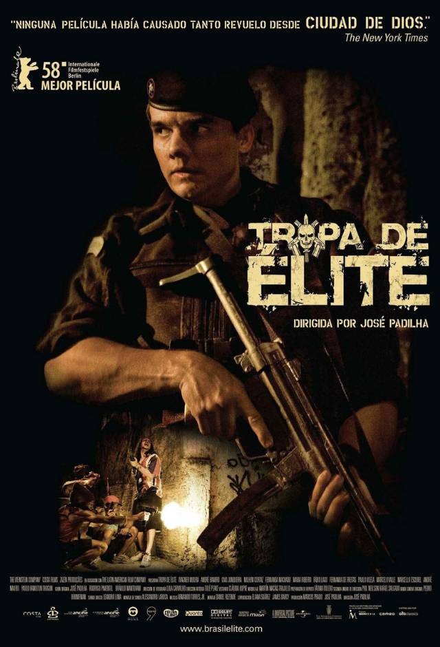

Nascimento, capitão da tropa de elite do Rio de Janeiro, é escolhido para chefiar uma das equipes cuja missão é apaziguar o Morro do Turano. Ele precisa cumprir as ordens enquanto procura por um substituto para ficar em seu lugar. Em meio a um tiroteio, Nascimento e sua equipe resgatam Neto e Matias, dois aspirantes a oficiais da PM. Ansiosos para entrar em ação, os dois se candidatam ao curso de formação do Batalhão de Operações Policiais Especiais.
• Lançamento: 12 de outubro de 2007 (Brasil)
• Direção: José Padilha
• Roteiro: Bráulio Mantovani
• Duração: 115 minutos
• O filme venceu o Urso de Ouro no Festival de Berlim, mesmo antes de estrear oficialmente nos cinemas brasileiros.
• Foi gravado em diversas locações reais do Rio de Janeiro, incluindo comunidades e áreas urbanas, além de espaços como a Pontifícia Universidade Católica do Rio de Janeiro, o que contribuiu para o realismo da narrativa.
• O personagem Capitão Nascimento, interpretado por Wagner Moura, se tornou um dos mais marcantes do cinema nacional.